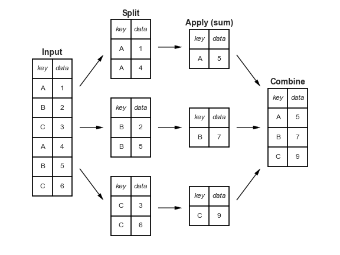
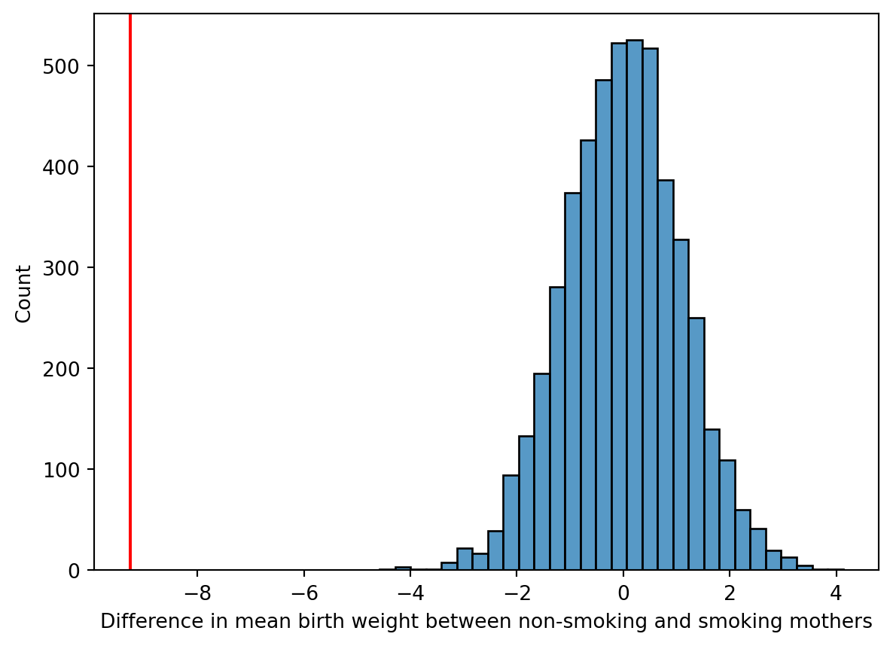

{kind=link}
import numpy as np
# pd is the prefix convention for pandas
import pandas as pd
print(pd.__version__)2.2.3Getting started with Pandas Data Frames
Open the live notebook in Google Colab or download the live notebook.
Data wrangling is a broad term for transforming data from one form into another. It some times is synonymous with “data cleaning”, i.e., preparing “messy” raw data for further analysis, but data wrangling can also refer to the analysis itself (including data transformation, visualization, aggregation). Today we will focus on the data structures and techniques used to store, transform and aggregate tabular data. These tools build on the vectorized approaches, and specifically the NumPy library, we just learned about.
The pandas Python package offers a rich set of powerful tools for working with tabular data. The name “pandas” is originally derived from the common term “panel data.” While different users pronounce the package name in different ways, for cuteness reasons we prefer to pronounce it like the plural of “panda [bears]”.
Let’s get started with our standard imports. Note the new addition of import pandas as pd.
import numpy as np
# pd is the prefix convention for pandas
import pandas as pd
print(pd.__version__)2.2.3The two key data structures offered by Pandas are Series, a 1-D array, and DataFrame, a 2-D table with rows and columns.
If you have used Microsoft Excel, Google Sheets, or other similar spreadsheet, you have effectively used a Pandas DataFrame (which is simiar to R’s dataframe).
What are the key properties of a spreadsheet table:
The pandas DataFrame type is designed for this kind of data.
There are lot of different ways to conceptually think about DataFrames including (but not limited to) as a spreadsheet, or a database table, or as a list/dictionary of 1-D Series (the columns) with the column label as the key. The last is closer to the underlying implementation and a common way to create DataFrames.
Let’s get started by loading some example data with physiological measurements and species labels for several populations of Adelie, Chinstrap, and Gentoo penguins (the “Palmer Penguins” data.)
url = "https://raw.githubusercontent.com/middcs/data-science-notes/main/data/palmer-penguins/palmer-penguins.csv"
# df is a common variable name for data frames
df = pd.read_csv(url)
type(df)pandas.core.frame.DataFrameChecking out the resulting data, we see a lot happened in that one function call! Pandas downloaded the data from the provided URL, parsed the CSV file and constructed a DataFrame of size (344, 17) (rows × columns).
df.shape.df| studyName | Sample Number | Species | Region | Island | Stage | Individual ID | Clutch Completion | Date Egg | Culmen Length (mm) | Culmen Depth (mm) | Flipper Length (mm) | Body Mass (g) | Sex | Delta 15 N (o/oo) | Delta 13 C (o/oo) | Comments | |
|---|---|---|---|---|---|---|---|---|---|---|---|---|---|---|---|---|---|
| 0 | PAL0708 | 1 | Adelie Penguin (Pygoscelis adeliae) | Anvers | Torgersen | Adult, 1 Egg Stage | N1A1 | Yes | 11/11/07 | 39.1 | 18.7 | 181.0 | 3750.0 | MALE | NaN | NaN | Not enough blood for isotopes. |
| 1 | PAL0708 | 2 | Adelie Penguin (Pygoscelis adeliae) | Anvers | Torgersen | Adult, 1 Egg Stage | N1A2 | Yes | 11/11/07 | 39.5 | 17.4 | 186.0 | 3800.0 | FEMALE | 8.94956 | -24.69454 | NaN |
| 2 | PAL0708 | 3 | Adelie Penguin (Pygoscelis adeliae) | Anvers | Torgersen | Adult, 1 Egg Stage | N2A1 | Yes | 11/16/07 | 40.3 | 18.0 | 195.0 | 3250.0 | FEMALE | 8.36821 | -25.33302 | NaN |
| 3 | PAL0708 | 4 | Adelie Penguin (Pygoscelis adeliae) | Anvers | Torgersen | Adult, 1 Egg Stage | N2A2 | Yes | 11/16/07 | NaN | NaN | NaN | NaN | NaN | NaN | NaN | Adult not sampled. |
| 4 | PAL0708 | 5 | Adelie Penguin (Pygoscelis adeliae) | Anvers | Torgersen | Adult, 1 Egg Stage | N3A1 | Yes | 11/16/07 | 36.7 | 19.3 | 193.0 | 3450.0 | FEMALE | 8.76651 | -25.32426 | NaN |
| ... | ... | ... | ... | ... | ... | ... | ... | ... | ... | ... | ... | ... | ... | ... | ... | ... | ... |
| 339 | PAL0910 | 120 | Gentoo penguin (Pygoscelis papua) | Anvers | Biscoe | Adult, 1 Egg Stage | N38A2 | No | 12/1/09 | NaN | NaN | NaN | NaN | NaN | NaN | NaN | NaN |
| 340 | PAL0910 | 121 | Gentoo penguin (Pygoscelis papua) | Anvers | Biscoe | Adult, 1 Egg Stage | N39A1 | Yes | 11/22/09 | 46.8 | 14.3 | 215.0 | 4850.0 | FEMALE | 8.41151 | -26.13832 | NaN |
| 341 | PAL0910 | 122 | Gentoo penguin (Pygoscelis papua) | Anvers | Biscoe | Adult, 1 Egg Stage | N39A2 | Yes | 11/22/09 | 50.4 | 15.7 | 222.0 | 5750.0 | MALE | 8.30166 | -26.04117 | NaN |
| 342 | PAL0910 | 123 | Gentoo penguin (Pygoscelis papua) | Anvers | Biscoe | Adult, 1 Egg Stage | N43A1 | Yes | 11/22/09 | 45.2 | 14.8 | 212.0 | 5200.0 | FEMALE | 8.24246 | -26.11969 | NaN |
| 343 | PAL0910 | 124 | Gentoo penguin (Pygoscelis papua) | Anvers | Biscoe | Adult, 1 Egg Stage | N43A2 | Yes | 11/22/09 | 49.9 | 16.1 | 213.0 | 5400.0 | MALE | 8.36390 | -26.15531 | NaN |
344 rows × 17 columns
We noted above that DataFrame columns can have different types. We can query the types for each column with the dtypes attribute. The object type is the default when Pandas can’t infer a numeric type. This is very common when the columns contain strings. You can give string columns a dedicated data type, but we won’t focus on that here.
df.dtypesstudyName object
Sample Number int64
Species object
Region object
Island object
Stage object
Individual ID object
Clutch Completion object
Date Egg object
Culmen Length (mm) float64
Culmen Depth (mm) float64
Flipper Length (mm) float64
Body Mass (g) float64
Sex object
Delta 15 N (o/oo) float64
Delta 13 C (o/oo) float64
Comments object
dtype: objectSome other commonly used methods for data inspection:
.. The object instance to the left of the dot is the receiver, the object on which we want to call the method. You can think of a calling a method as a calling function that takes the receiver as the first argument, i.e., df.head() is equivalent to pd.DataFrame.head(df).df.head(): Display first 5 rowsdf.info(): Display column names and types, along with non-null countsdf.describe(): Generate statistical summary of dataThe key parts of the DataFrame:
Series, one for each column. Each array has the same length. Many of the operations on these arrays will be familiar from NumPy.We could anticipate wanting to select data using both sets of labels, i.e., by column and by row. Recall we described a DataFrame as a dictionary of columns, and we can indeed, use the indexing operator [], to select columns by name.
# Select a single column
df["Region"].head()0 Anvers
1 Anvers
2 Anvers
3 Anvers
4 Anvers
Name: Region, dtype: object# Select and optionally reorder columns with a list
df[["Species", "Region", "Island", "Culmen Length (mm)"]].head()| Species | Region | Island | Culmen Length (mm) | |
|---|---|---|---|---|
| 0 | Adelie Penguin (Pygoscelis adeliae) | Anvers | Torgersen | 39.1 |
| 1 | Adelie Penguin (Pygoscelis adeliae) | Anvers | Torgersen | 39.5 |
| 2 | Adelie Penguin (Pygoscelis adeliae) | Anvers | Torgersen | 40.3 |
| 3 | Adelie Penguin (Pygoscelis adeliae) | Anvers | Torgersen | NaN |
| 4 | Adelie Penguin (Pygoscelis adeliae) | Anvers | Torgersen | 36.7 |
To access rows (and columns) via their labels we use the loc attribute. It exposes flexible indexing capabilities, e.g.
# Select rows by label (using the index)
df.loc[0:3].head()| studyName | Sample Number | Species | Region | Island | Stage | Individual ID | Clutch Completion | Date Egg | Culmen Length (mm) | Culmen Depth (mm) | Flipper Length (mm) | Body Mass (g) | Sex | Delta 15 N (o/oo) | Delta 13 C (o/oo) | Comments | |
|---|---|---|---|---|---|---|---|---|---|---|---|---|---|---|---|---|---|
| 0 | PAL0708 | 1 | Adelie Penguin (Pygoscelis adeliae) | Anvers | Torgersen | Adult, 1 Egg Stage | N1A1 | Yes | 11/11/07 | 39.1 | 18.7 | 181.0 | 3750.0 | MALE | NaN | NaN | Not enough blood for isotopes. |
| 1 | PAL0708 | 2 | Adelie Penguin (Pygoscelis adeliae) | Anvers | Torgersen | Adult, 1 Egg Stage | N1A2 | Yes | 11/11/07 | 39.5 | 17.4 | 186.0 | 3800.0 | FEMALE | 8.94956 | -24.69454 | NaN |
| 2 | PAL0708 | 3 | Adelie Penguin (Pygoscelis adeliae) | Anvers | Torgersen | Adult, 1 Egg Stage | N2A1 | Yes | 11/16/07 | 40.3 | 18.0 | 195.0 | 3250.0 | FEMALE | 8.36821 | -25.33302 | NaN |
| 3 | PAL0708 | 4 | Adelie Penguin (Pygoscelis adeliae) | Anvers | Torgersen | Adult, 1 Egg Stage | N2A2 | Yes | 11/16/07 | NaN | NaN | NaN | NaN | NaN | NaN | NaN | Adult not sampled. |
Here we select the rows with indices [0,3] inclusive (using Python’s slicing operator). While it may look like we are selecting rows at indices [0,3], that is not the case. We are selecting based on the label, not the position. Consider the following example:
df.loc[3:6].loc[0:3].head()| studyName | Sample Number | Species | Region | Island | Stage | Individual ID | Clutch Completion | Date Egg | Culmen Length (mm) | Culmen Depth (mm) | Flipper Length (mm) | Body Mass (g) | Sex | Delta 15 N (o/oo) | Delta 13 C (o/oo) | Comments | |
|---|---|---|---|---|---|---|---|---|---|---|---|---|---|---|---|---|---|
| 3 | PAL0708 | 4 | Adelie Penguin (Pygoscelis adeliae) | Anvers | Torgersen | Adult, 1 Egg Stage | N2A2 | Yes | 11/16/07 | NaN | NaN | NaN | NaN | NaN | NaN | NaN | Adult not sampled. |
Notice we only get a single row, with index 3. The first operation retries rows with labels 3, 4, 5, 6, and the latter selects rows with labels 0, 1, 2, 3.
To select rows by position, e.g., as you might select values in a list, we use the iloc attribute. We can again uses slices, but the ranges are position and are exclusive, i.e., the end index is excluded. Notice here we get 3 rows, with indices 3, 4, and 5. The first operation selects those rows (at positions 3, 4, 5 but not including 6), which are now at position 0, 1, and 2 (but not 3) in the result DataFrame. The second selection returns those rows. Note each row keeps its label throughout the various selection operations.
df.iloc[3:6].iloc[0:3].head()| studyName | Sample Number | Species | Region | Island | Stage | Individual ID | Clutch Completion | Date Egg | Culmen Length (mm) | Culmen Depth (mm) | Flipper Length (mm) | Body Mass (g) | Sex | Delta 15 N (o/oo) | Delta 13 C (o/oo) | Comments | |
|---|---|---|---|---|---|---|---|---|---|---|---|---|---|---|---|---|---|
| 3 | PAL0708 | 4 | Adelie Penguin (Pygoscelis adeliae) | Anvers | Torgersen | Adult, 1 Egg Stage | N2A2 | Yes | 11/16/07 | NaN | NaN | NaN | NaN | NaN | NaN | NaN | Adult not sampled. |
| 4 | PAL0708 | 5 | Adelie Penguin (Pygoscelis adeliae) | Anvers | Torgersen | Adult, 1 Egg Stage | N3A1 | Yes | 11/16/07 | 36.7 | 19.3 | 193.0 | 3450.0 | FEMALE | 8.76651 | -25.32426 | NaN |
| 5 | PAL0708 | 6 | Adelie Penguin (Pygoscelis adeliae) | Anvers | Torgersen | Adult, 1 Egg Stage | N3A2 | Yes | 11/16/07 | 39.3 | 20.6 | 190.0 | 3650.0 | MALE | 8.66496 | -25.29805 | NaN |
Alongside label and position we can also select data via boolean masks (i.e., data-driven filtering). The following filters the data to just those rows where the condition is True. To do so, we are computing an array (vector) of booleans using a vectorized comparison and then selecting those rows with True. Any boolean vector can be used, that is the computation used to generate the boolean index can be arbitrarily complex, incorporating different element-wise comparisons and bit-wise & (and) and | (or) or ~ (not) operations.
# Since slicing and filtering rows is common, slices or boolean arrays inside [] apply to rows, i.e.,
# is shorthand for df.loc[df["Culmen Length (mm)"] < 40].head()
df[df["Culmen Length (mm)"] < 40].head()| studyName | Sample Number | Species | Region | Island | Stage | Individual ID | Clutch Completion | Date Egg | Culmen Length (mm) | Culmen Depth (mm) | Flipper Length (mm) | Body Mass (g) | Sex | Delta 15 N (o/oo) | Delta 13 C (o/oo) | Comments | |
|---|---|---|---|---|---|---|---|---|---|---|---|---|---|---|---|---|---|
| 0 | PAL0708 | 1 | Adelie Penguin (Pygoscelis adeliae) | Anvers | Torgersen | Adult, 1 Egg Stage | N1A1 | Yes | 11/11/07 | 39.1 | 18.7 | 181.0 | 3750.0 | MALE | NaN | NaN | Not enough blood for isotopes. |
| 1 | PAL0708 | 2 | Adelie Penguin (Pygoscelis adeliae) | Anvers | Torgersen | Adult, 1 Egg Stage | N1A2 | Yes | 11/11/07 | 39.5 | 17.4 | 186.0 | 3800.0 | FEMALE | 8.94956 | -24.69454 | NaN |
| 4 | PAL0708 | 5 | Adelie Penguin (Pygoscelis adeliae) | Anvers | Torgersen | Adult, 1 Egg Stage | N3A1 | Yes | 11/16/07 | 36.7 | 19.3 | 193.0 | 3450.0 | FEMALE | 8.76651 | -25.32426 | NaN |
| 5 | PAL0708 | 6 | Adelie Penguin (Pygoscelis adeliae) | Anvers | Torgersen | Adult, 1 Egg Stage | N3A2 | Yes | 11/16/07 | 39.3 | 20.6 | 190.0 | 3650.0 | MALE | 8.66496 | -25.29805 | NaN |
| 6 | PAL0708 | 7 | Adelie Penguin (Pygoscelis adeliae) | Anvers | Torgersen | Adult, 1 Egg Stage | N4A1 | No | 11/15/07 | 38.9 | 17.8 | 181.0 | 3625.0 | FEMALE | 9.18718 | -25.21799 | Nest never observed with full clutch. |
The process of creating and modifying columns is often described as “mutation”. Just as we create new or update existing key-value pairs in a Python Dictionary with assignment, we can do the same with columns in a Pandas DataFrame. For example, the following adds a column with the culmen length in centimeters (you may need to scroll to the right to see it). The division is an element-wise “vectorized” operation like those we saw with NumPy (and in many cases Pandas is actually storing the column as NumPy array).
df["Culmen Length (cm)"] = df["Culmen Length (mm)"] / 10
df.head()| studyName | Sample Number | Species | Region | Island | Stage | Individual ID | Clutch Completion | Date Egg | Culmen Length (mm) | Culmen Depth (mm) | Flipper Length (mm) | Body Mass (g) | Sex | Delta 15 N (o/oo) | Delta 13 C (o/oo) | Comments | Culmen Length (cm) | |
|---|---|---|---|---|---|---|---|---|---|---|---|---|---|---|---|---|---|---|
| 0 | PAL0708 | 1 | Adelie Penguin (Pygoscelis adeliae) | Anvers | Torgersen | Adult, 1 Egg Stage | N1A1 | Yes | 11/11/07 | 39.1 | 18.7 | 181.0 | 3750.0 | MALE | NaN | NaN | Not enough blood for isotopes. | 3.91 |
| 1 | PAL0708 | 2 | Adelie Penguin (Pygoscelis adeliae) | Anvers | Torgersen | Adult, 1 Egg Stage | N1A2 | Yes | 11/11/07 | 39.5 | 17.4 | 186.0 | 3800.0 | FEMALE | 8.94956 | -24.69454 | NaN | 3.95 |
| 2 | PAL0708 | 3 | Adelie Penguin (Pygoscelis adeliae) | Anvers | Torgersen | Adult, 1 Egg Stage | N2A1 | Yes | 11/16/07 | 40.3 | 18.0 | 195.0 | 3250.0 | FEMALE | 8.36821 | -25.33302 | NaN | 4.03 |
| 3 | PAL0708 | 4 | Adelie Penguin (Pygoscelis adeliae) | Anvers | Torgersen | Adult, 1 Egg Stage | N2A2 | Yes | 11/16/07 | NaN | NaN | NaN | NaN | NaN | NaN | NaN | Adult not sampled. | NaN |
| 4 | PAL0708 | 5 | Adelie Penguin (Pygoscelis adeliae) | Anvers | Torgersen | Adult, 1 Egg Stage | N3A1 | Yes | 11/16/07 | 36.7 | 19.3 | 193.0 | 3450.0 | FEMALE | 8.76651 | -25.32426 | NaN | 3.67 |
We can perform similar vectorized operations on the string columns, but need to expose them via the str attribute, e.g.,
df["Species"].str.upper()0 ADELIE PENGUIN (PYGOSCELIS ADELIAE)
1 ADELIE PENGUIN (PYGOSCELIS ADELIAE)
2 ADELIE PENGUIN (PYGOSCELIS ADELIAE)
3 ADELIE PENGUIN (PYGOSCELIS ADELIAE)
4 ADELIE PENGUIN (PYGOSCELIS ADELIAE)
...
339 GENTOO PENGUIN (PYGOSCELIS PAPUA)
340 GENTOO PENGUIN (PYGOSCELIS PAPUA)
341 GENTOO PENGUIN (PYGOSCELIS PAPUA)
342 GENTOO PENGUIN (PYGOSCELIS PAPUA)
343 GENTOO PENGUIN (PYGOSCELIS PAPUA)
Name: Species, Length: 344, dtype: objectFor example, to improve readability we might want just the first part the species name, i.e., “Adelie” instead of “Adelie Penguin (Pygoscelis adeliae)”. This is the first part of the name up to the space. We can get it by splitting the string by whitespace and select the value at index 0 in the resulting list. Note that we can chain those operations, but need a str before each one to apply the resulting operation element-wise.
df["Species"] = df["Species"].str.split().str.get(0)
df.head()| studyName | Sample Number | Species | Region | Island | Stage | Individual ID | Clutch Completion | Date Egg | Culmen Length (mm) | Culmen Depth (mm) | Flipper Length (mm) | Body Mass (g) | Sex | Delta 15 N (o/oo) | Delta 13 C (o/oo) | Comments | Culmen Length (cm) | |
|---|---|---|---|---|---|---|---|---|---|---|---|---|---|---|---|---|---|---|
| 0 | PAL0708 | 1 | Adelie | Anvers | Torgersen | Adult, 1 Egg Stage | N1A1 | Yes | 11/11/07 | 39.1 | 18.7 | 181.0 | 3750.0 | MALE | NaN | NaN | Not enough blood for isotopes. | 3.91 |
| 1 | PAL0708 | 2 | Adelie | Anvers | Torgersen | Adult, 1 Egg Stage | N1A2 | Yes | 11/11/07 | 39.5 | 17.4 | 186.0 | 3800.0 | FEMALE | 8.94956 | -24.69454 | NaN | 3.95 |
| 2 | PAL0708 | 3 | Adelie | Anvers | Torgersen | Adult, 1 Egg Stage | N2A1 | Yes | 11/16/07 | 40.3 | 18.0 | 195.0 | 3250.0 | FEMALE | 8.36821 | -25.33302 | NaN | 4.03 |
| 3 | PAL0708 | 4 | Adelie | Anvers | Torgersen | Adult, 1 Egg Stage | N2A2 | Yes | 11/16/07 | NaN | NaN | NaN | NaN | NaN | NaN | NaN | Adult not sampled. | NaN |
| 4 | PAL0708 | 5 | Adelie | Anvers | Torgersen | Adult, 1 Egg Stage | N3A1 | Yes | 11/16/07 | 36.7 | 19.3 | 193.0 | 3450.0 | FEMALE | 8.76651 | -25.32426 | NaN | 3.67 |
One of the fundamental pattern in tabular data analysis is to perform computation by/across groups. In our penguins data, for example, a very natural thing to do is to compute summary statistics by species, or perhaps by habitat (or both!). We can contextualize this task in three stages:
This pattern is so common that the phrase “split-apply-combine” now appears in many texts on data analysis. This phrase was originally coined by Hadley Wickham, who is famous for developing many of the modern tools for data analysis in the R programming language.

Pandas implements this pattern with the groupby method. For example, we can compute the mean of the numeric columns as a function of species using
df.groupby("Species").mean(numeric_only=True)| Sample Number | Culmen Length (mm) | Culmen Depth (mm) | Flipper Length (mm) | Body Mass (g) | Delta 15 N (o/oo) | Delta 13 C (o/oo) | Culmen Length (cm) | |
|---|---|---|---|---|---|---|---|---|
| Species | ||||||||
| Adelie | 76.5 | 38.791391 | 18.346358 | 189.953642 | 3700.662252 | 8.859733 | -25.804194 | 3.879139 |
| Chinstrap | 34.5 | 48.833824 | 18.420588 | 195.823529 | 3733.088235 | 9.356155 | -24.546542 | 4.883382 |
| Gentoo | 62.5 | 47.504878 | 14.982114 | 217.186992 | 5076.016260 | 8.245338 | -26.185298 | 4.750488 |
Compare these values to the overall means. We now readily observe that Adelie penguins have much shorter bills (“Culmen length (mm)”) than Chinstrap and Gentoo penguins.
df.mean(numeric_only=True)Sample Number 63.151163
Culmen Length (mm) 43.921930
Culmen Depth (mm) 17.151170
Flipper Length (mm) 200.915205
Body Mass (g) 4201.754386
Delta 15 N (o/oo) 8.733382
Delta 13 C (o/oo) -25.686292
Culmen Length (cm) 4.392193
dtype: float64Conceptually Pandas collected or “grouped” together all the data into subsets of rows with same value for the specified variable(s), then applied the aggregation function to each subset. We can think of the groupby method as returning a special “view” of the DataFrame, such that any aggregation functions used will by applied to each of the individual “groups” (i.e. species).
Split-Apply-Combine enables sophisticated aggregations with very little code. Consider computing multiple statistics for all combinations of Species and Island. Note that we use a different approach to efficiently perform different aggregation operation on the same subsets (instead repeating the grouping operation). The aggregate method is a general approach to apply multiple functions to each group. It does not have a numeric_only argument, so we subset the groups to just the column(s) of interest.
summary = df.groupby(["Species", "Island"])[["Culmen Length (mm)","Culmen Depth (mm)"]].aggregate(["mean", "std"])
summary| Culmen Length (mm) | Culmen Depth (mm) | ||||
|---|---|---|---|---|---|
| mean | std | mean | std | ||
| Species | Island | ||||
| Adelie | Biscoe | 38.975000 | 2.480916 | 18.370455 | 1.188820 |
| Dream | 38.501786 | 2.465359 | 18.251786 | 1.133617 | |
| Torgersen | 38.950980 | 3.025318 | 18.429412 | 1.339447 | |
| Chinstrap | Dream | 48.833824 | 3.339256 | 18.420588 | 1.135395 |
| Gentoo | Biscoe | 47.504878 | 3.081857 | 14.982114 | 0.981220 |
Complex data summary tables like the one above are useful and powerful, but it is also non-obvious how we can extract specific data of interest. For example, how can I get the mean culmen (bill) length for Chinstrap penguins on Dream island? To extract this kind of data, we leverage Pandas’ hierarchical indices, in which we pass multiple keys to the .loc attribute as a tuple.
# Provide tuples for row and column index
summary.loc[("Chinstrap", "Dream"),("Culmen Length (mm)", "mean")]np.float64(48.83382352941176)More generally, we can think of each value provided for an index drops us one level in the hierarchy. For example, the following returns a DataFrame with row indices for just island and column indices for just the aggregates of the “Culmen Length (mm)” column.
# Tuple literals are created with parentheses, but parentheses with a single element (no comma) are interpreted
# as a grouping (in the PEMDAS sense), not a tuple. To create a single element tuple we add a trailing comma.
summary.loc[("Chinstrap",),("Culmen Length (mm)",)]| mean | std | |
|---|---|---|
| Island | ||
| Dream | 48.833824 | 3.339256 |
The following data is birth weight data (in ounces) for a cohort of babies along with other data about the baby and mother, including whether the mother smoked during pregnancy(Adhikari, DeNero, and Wagner 2022). Our hypothesis is that birth weight is negatively associated with whether the mother smoked during pregnancy (i.e., that babies born to mothers who smoked will be smaller on average).
baby = pd.read_csv("https://www.inferentialthinking.com/data/baby.csv")
baby| Birth Weight | Gestational Days | Maternal Age | Maternal Height | Maternal Pregnancy Weight | Maternal Smoker | |
|---|---|---|---|---|---|---|
| 0 | 120 | 284 | 27 | 62 | 100 | False |
| 1 | 113 | 282 | 33 | 64 | 135 | False |
| 2 | 128 | 279 | 28 | 64 | 115 | True |
| 3 | 108 | 282 | 23 | 67 | 125 | True |
| 4 | 136 | 286 | 25 | 62 | 93 | False |
| ... | ... | ... | ... | ... | ... | ... |
| 1169 | 113 | 275 | 27 | 60 | 100 | False |
| 1170 | 128 | 265 | 24 | 67 | 120 | False |
| 1171 | 130 | 291 | 30 | 65 | 150 | True |
| 1172 | 125 | 281 | 21 | 65 | 110 | False |
| 1173 | 117 | 297 | 38 | 65 | 129 | False |
1174 rows × 6 columns
Here we see a sample of the data (1174 observations total). We are most interested in the “Birth Weight” and “Maternal Smoker” columns. We can use split-apply-combine technique, via the groupby method, to quickly figure out how many smokers and non-smokers are in the data. That helps us answer the question “Do we have enough data to do a meaningful analysis of that variable?”. Fortunately it appears we do!
baby.groupby("Maternal Smoker").size()Maternal Smoker
False 715
True 459
dtype: int64Let’s check out the means for smokers and non-smokers. Again we can use groupby.
means = baby.groupby("Maternal Smoker")["Birth Weight"].mean()
meansMaternal Smoker
False 123.085315
True 113.819172
Name: Birth Weight, dtype: float64Notice the over 9 ounce difference in average birth weight! That is suggestive of a significant difference. Specifically:
# Compute the difference to the previous value. We expect the first to have NaN (not a number)
# since there is not previous value.
means.diff()Maternal Smoker
False NaN
True -9.266143
Name: Birth Weight, dtype: float64In contrast, the other attributes seem similar between the two groups.
baby.groupby("Maternal Smoker").mean()| Birth Weight | Gestational Days | Maternal Age | Maternal Height | Maternal Pregnancy Weight | |
|---|---|---|---|---|---|
| Maternal Smoker | |||||
| False | 123.085315 | 279.874126 | 27.544056 | 64.013986 | 129.47972 |
| True | 113.819172 | 277.897603 | 26.736383 | 64.104575 | 126.91939 |
However, is that difference in average birth weight actually meaningful or did it just arise by chance? That is, what if in reality there is no difference between the two groups and what we are observing is just an artifact of how these particular mothers/babies were selected (it just happened that this set of non-smoking mothers had larger babies)? We will describe that latter expectation, that there is no difference, as the null hypothesis.
We would like to determine how likely it is that the null hypothesis is true. To do so we can simulate the null hypothesis by randomly shuffling the “Maternal Smoker”, i.e. randomly assigning row to be a smoker or non-smoker to simulate a different random sample of patients, and then recomputing the difference in mean birth weight. If the null hypothesis is true, the difference in means of shuffled data will be similar to what we observe in the actual data.
Pandas and the other libraries will use are very complex and the interfaces are not always intuitive (understatement!). As a result, working with these libraries can be a good application for LLMs. We know what we want, and having learned about split-apply-combine, we generally know what the solution should include, but it’s not always clear which of the many hundreds or thousands of functions that are available would be relevant. As experiment, let’s try asking an LLM to implement this code for us.
Before doing so let’s make sure we know what to expect. We need to:
groupby (or some type of grouping)Let’s turn GenAI loose. After a little iteration with Claude Sonnet 4.5 and Copilot (GPT-5 mini) I settled on the following prompt.
Show me a permutation test in Python using Pandas groupby() and shuffling the “Material Smoker” column to test the difference in mean “Birth Weight”.
This is more prescriptive than might be desired. Many prompts produced lower level implementations (i.e., using boolean index into column series) than we wanted. Those approaches may be faster, but are not very clear (and our ultimate goal is learning, and specifically here, learning to use Pandas).
A possible approach to computing a distribution of birth weight differences for permuted labels:
n_permutations = 5000
permuted_diffs = []
for i in range(n_permutations):
1 shuffled_smoking = baby["Maternal Smoker"].sample(frac=1).reset_index(drop=True)
2 weight_diff = baby.groupby(shuffled_smoking)["Birth Weight"].mean().diff().iloc[-1]
permuted_diffs.append(weight_diff)
permuted_diffs = np.array(permuted_diffs)baby["Maternal Smoker"].sample(frac=1) produces a random permutation of the label column. We reset the index to the default integers index, i.e., match the position.
shuffled_smoking to select the relevant rows from baby. If we hadn’t reset the indices, this would just re-compute the difference in the actual data (try it to convince yourself). But by resetting the index we “break” the original relationship between smoking status and birth weight.
from matplotlib import pyplot as plt
import seaborn as sns
sns.histplot(permuted_diffs, bins=30)
plt.axvline(x=means.diff().iloc[-1], color="r", label="Actual difference")
plt.xlabel("Difference in mean birth weight between non-smoking and smoking mothers")
plt.show()
That sure looks significant, and indeed we don’t observe any examples with larger effect. That would imply an empirical p-value, the probability of observing a more extreme test statistic assuming the null model, of \(p<\) 0.0002.
(np.abs(permuted_diffs) >= abs(means.diff().iloc[-1])).sum()np.int64(0)A permutation test, what we did above, is a statistical hypothesis test! It is has the nice property that we don’t need to make any assumptions about distribution of the data. And we can implement it and interpret the results without a lot of prior statistics experience. Our goal today is to learn about how to work with Pandas, not necessarily to learn about different forms of hypothesis testing. But this is not a “toy” example. The computational tools in our toolbox are already sufficient to make rigorous inferences about data!
© Michael Linderman and Phil Chodrow, 2025-2026